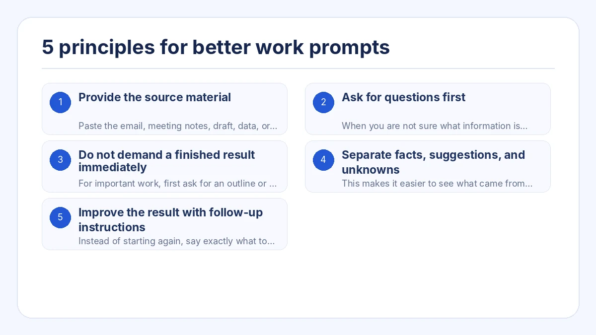
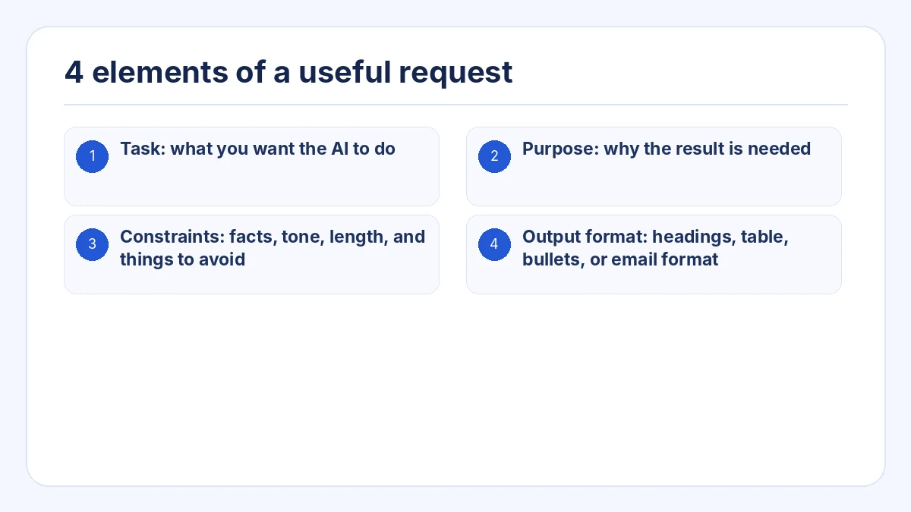
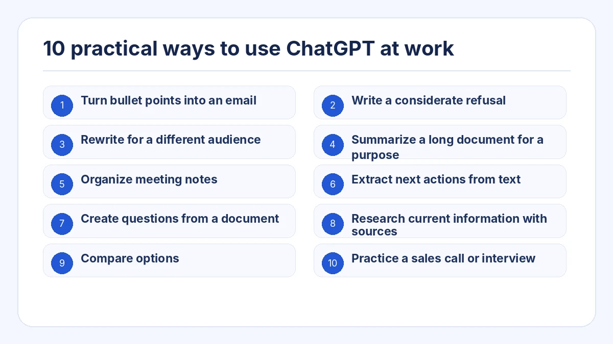
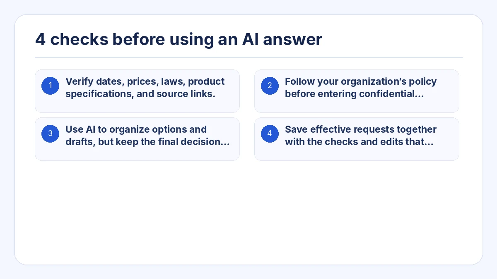

This guide shows a practical way to use ChatGPT at work. The goal is not to memorize a magic prompt, but to give the AI enough context, constraints, and an output format that match the task.
You can copy the prompt example, replace the bracketed details, and then review the result before using it in real work.
Key takeaways
- Give the AI the source material instead of asking it to invent everything from scratch.
- Ask it to request missing information before writing the final answer.
- Break complex work into planning, review, and drafting steps.
- Separate facts, suggestions, and unknowns when accuracy matters.
- Review the first answer and give targeted follow-up instructions.

1. Provide the source material
Paste the email, meeting notes, draft, data, or bullet points that the answer should be based on. Tell the AI not to add facts that are not in the material.
2. Ask for questions first
When you are not sure what information is needed, ask ChatGPT to identify the missing details and ask no more than three questions before answering.
3. Do not demand a finished result immediately
For important work, first ask for an outline or a list of points to include. Confirm the direction, then ask for the final text.
4. Separate facts, suggestions, and unknowns
This makes it easier to see what came from your material, what the AI is proposing, and what still needs human confirmation.
5. Improve the result with follow-up instructions
Instead of starting again, say exactly what to change: shorten it, make the tone calmer, put the conclusion first, or remove unsupported claims.
4 elements of a useful request
Replace the bracketed parts with your situation. Ask the AI not to invent missing facts and to list questions separately.
- Task: what you want the AI to do
- Purpose: why the result is needed
- Constraints: facts, tone, length, and things to avoid
- Output format: headings, table, bullets, or email format

## Task
Create a reply to the customer message below.
## Purpose
Acknowledge the problem, explain what is known, and make the next action clear.
## Source material
[Paste the customer message and confirmed internal facts]
## Constraints
- Do not promise a recovery time that has not been confirmed.
- Separate confirmed facts from points that still require investigation.
- Use a calm, professional tone.
- Do not add facts that are not in the source material.
## Output format
1. Subject line
2. Email body
3. Points that require confirmation before sending10 practical ways to use ChatGPT at work

1. Turn bullet points into an email
Provide the recipient, purpose, points to include, deadline, and tone.
2. Write a considerate refusal
State what cannot be done, the reason you can share, and a realistic alternative.
3. Rewrite for a different audience
Keep the facts but adapt the wording for a customer, executive, or beginner.
4. Summarize a long document for a purpose
Specify who will read the summary and what decision they need to make.
5. Organize meeting notes
Extract decisions, tasks, owners, deadlines, and unresolved items.
6. Extract next actions from text
Separate information to read from actions that someone must take.
7. Create questions from a document
Find gaps, contradictions, risks, and points that require confirmation.
8. Research current information with sources
Ask for dates, primary sources, and a clear separation between facts and inference.
9. Compare options
Define the comparison criteria and explain which conditions matter most.
10. Practice a sales call or interview
Set the role, scenario, question rules, and feedback criteria.
4 checks before using an AI answer
- Verify dates, prices, laws, product specifications, and source links.
- Follow your organization’s policy before entering confidential information.
- Use AI to organize options and drafts, but keep the final decision with a responsible person.
- Save effective requests together with the checks and edits that made the final result usable.

Frequently asked questions
Does a longer prompt always produce a better answer?
No. A prompt is useful when it contains the information needed for the decision. Extra background can make the important conditions harder to find.
What should I do when the answer is not what I expected?
Describe the exact difference. Ask for a shorter answer, a different audience, a clearer structure, or a separation between facts and suggestions.
How can I use ChatGPT when I do not know what to ask?
Ask it to question you first: “Ask me one question at a time until you have enough information to complete this task.”
Build work-ready AI requests from a task
Build structured AI requests without starting from a blank page
Prompt Ready includes work-focused uses such as replying to messages, organizing meeting notes, rewriting for an audience, comparing options, researching, and practicing conversations. Select a use, add the source text and conditions, and copy a request for the AI service you already use.
Prompt Ready is a Windows and macOS app that helps you build structured requests for ChatGPT, Gemini, Claude, and other AI services. Choose a task, add your source text and conditions, then copy a ready-to-use request.
Prompt Ready processes your text locally and does not automatically send it to an external AI service or a developer server. Once you paste the request into an AI service, that service’s data policy applies.
Start with one real task and improve the request through conversation
Choose one task you already do, such as replying to a customer, organizing meeting notes, or comparing options. Add the purpose, constraints, and output format, then review the first answer as a draft. This is more sustainable than trying to memorize a collection of long prompts.